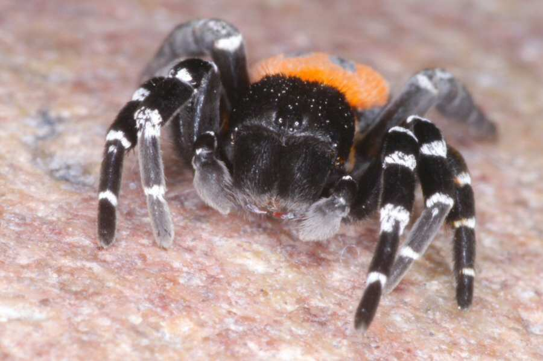

Eresus sandaliatus
This site contains over 1800 pictures of European and Australian spiders and information about them.
The European spiders were mainly found in The Netherlands and France. The Australian spiders were for the greater part found in Queensland and in lesser amounts in the Northern Terrtory, Western Australia, New South Wales and Victoria. The European spider site can be read in English, Dutch and some pages in Esperanto, the Australian pages only in English.
There is a section about the common biology of the spider, and the venomity of spiders.
I try to identify the spiders from the pictures I made. Therefore there may be errors in the determination of a species.
This site is regulary updated with newer pictures. Before 2005 the pictures were digitized with a Nikon Coolscan III from negatives or color slides. Since 2005 the pictures are digital images.
The main entry to the spider site is the European entry but do not miss the thumbnail entries for a rapid spider identification of this page for an behaviour identification.

| The European spider site European spiders in thumbnails |
The Australian spider site Australian spiders in thumbnails |
Araneoj en Esperanto |